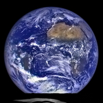
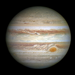

| Earth | Venus | Jupiter | Saturn | |
|---|---|---|---|---|
| Views |  |  | ||
| Mass (1024 kg) | 5.97 | 4.87 | 1898 | 568 |
| Diameter (km) | 12,756 | 12,104 | 142,984 | 120,536 |
| Gravity (m/s2) | 9.8 | 8.9 | 23.1 | 9.0 |
| Length of Day (hours) | 24.0 | 2802.0 | 9.9 | 10.7 |
| Distance from Sun (106 km) | 149.6 | 108.2 | 778.5 | 1432.0 |
| Orbital Period (days) | 365.2 | 224.7 | 4331 | 10,747 |
| Mean Temperature (C) | 15 | 464 | -110 | -140 |